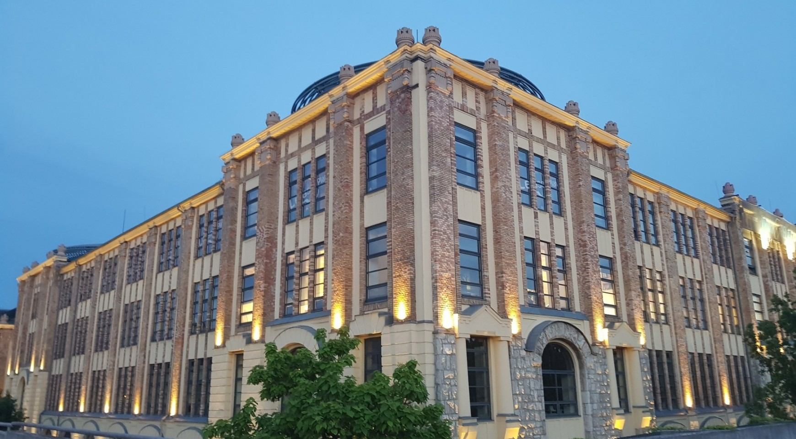

Drawings & planning packages
Existing and proposed plans, elevations and sections, assembled into drawing packages for your review and planning applications.
CAD productionRemote support for UK architectural practices
CAD drawings, 3D models and planning packages, prepared to your brief.
Sundance provides remote production support through Aki Gebrie. Book his time for a specific drawing package or regular monthly work, with direct contact throughout.

Based in Budapest. Working UK hours.
Fluent English
Hourly or monthly blocks
From £16 / hourfor regular blocks
01 / Services
Add drawing capacity for a planning deadline, a new project or an increase in workload. Aki works from your briefs, surveys and markups.
Existing and proposed plans, elevations and sections, assembled into drawing packages for your review and planning applications.
CAD production3D models and visualisations for reviewing design options and presenting proposals to clients.
3D productionFeasibility layouts, unit-mix options and schedules of area to compare how a site or building could be used.
Layout studiesAmendments to existing drawings from your redlines and markups, including layout changes and revisions during design development.
Drawing updatesAutoCAD · ArchiCAD · SketchUp · Lumion · Adobe Photoshop & Illustrator
02 / About Aki
Meet Aklilu “Aki” Gebrie
Aki is an architectural designer based in Budapest, with an MSc in Architecture from Budapest University of Technology and Economics (BME). He produces working drawings and space-planning packages for Sundance and provides ongoing remote support to a UK residential practice.
You brief Aki directly and review the work with him. His experience includes residential remodels, new-build housing layouts and large-scale self-storage planning. He speaks fluent English and works UK hours.
Relevant experience
Monthly production support for a Chichester residential practice. Work includes existing and proposed drawings for a three-bedroom bungalow remodel in Rogate and layout options for a scheme of three to five detached houses in Nutbourne.
Residential alterations and new-build layoutsDWG drawing production, unit layouts and schedules of area for a large-scale self-storage development in Budapest. Work includes showroom layouts and revisions to unit sizes in response to demand.
Working drawings and space planning03 / Scope and fees
Start with a small assignment to assess the work before booking further hours. Regular blocks are available at £16/hour, with no long-term commitment required.
Send Aki a description of the work, the required drawings, your deadline and the software you use. Include the relevant surveys or markups.
Agree the deliverables, file formats, timing and hours with Aki before work begins.
Review the drawings with Aki and provide any revision notes. Arrange further assignments or a monthly block if you need ongoing support.
Rate for regular blocks
£16 / hour
For regular blocks of work.
No long-term commitment required.
04 / Contact
Budapest ↔ United KingdomEmail Aki with the work you need and your deadline.
He can discuss the scope, availability and fees.
Email Aki directly · Portfolio available on request